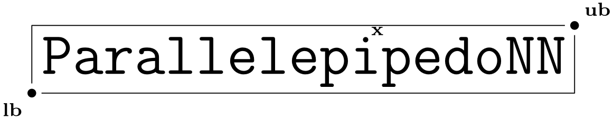

Interval
Circle
InfCircle
ParallelepipedalGuarantee
TopParallelGuarantee
BottomParallelGurantee
DistParallelGurantee
TopDistParallelGurantee
BottomDistParallelGurantee
CyclicGuarantee
TopCyclicGuarantee
BottomCyclicGuarantee
ParallelepipedalSearch
TopDownSearch
CompleteBottomUpSearch
BottomUpLinearDFS
BottomUpDichotomicDFS
BottomUpBFS
CyclicSearch
BottomUpLinearSearch
BottomUpDichotomicSearch
CompleteBottomUpDichotomicSearch
marabou2numpy()
MarabouVerification
SoundMarabouVerifier
CompleteMarabouVerifier
MLPAbstract
TFMLPBaseClass
FromArchitecture
FromWeights
FromDir
FromRandom
Index
Module Index
Search Page